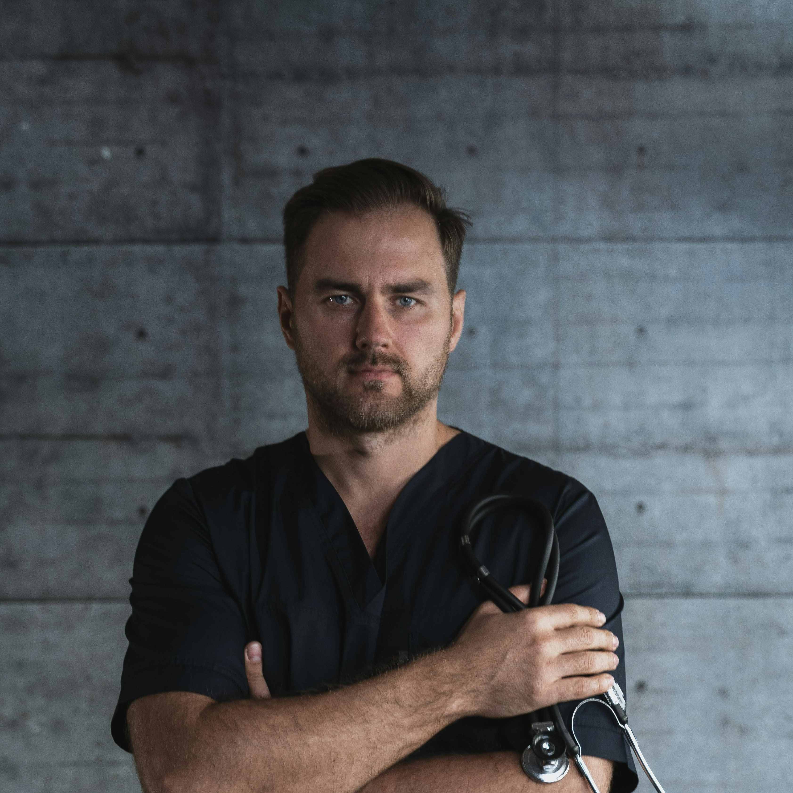

Inicio
¿Quiénes somos?
Alimentación basada en plantas
Nutrientes
Recetas
Profesionales
Sugerencias/opiniones
Profesionales
Podes sacar turno con nutricionistas especializados.
Lic. Rocio Hernandez MN 10789
Lic. Hernan Maroni MN 108902

Lic. Julieta Brignole MN 11423